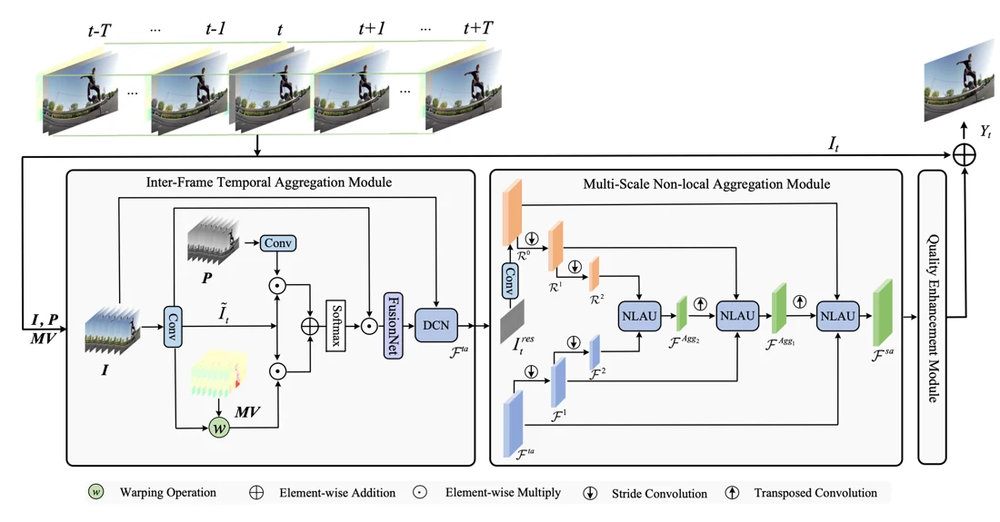

A compressed video carries more than the pixels you decode. To build a bitstream the encoder already estimated how content moves between frames and recorded what its prediction could not explain. Motion vectors and residuals are two byproducts most enhancement methods simply throw away.
一段压缩视频所携带的，不止是你解码出来的那些像素。为了生成码流，编码器已经估计过内容在帧间如何运动，并记录下了它的预测未能解释的部分。运动向量与残差这两个副产物，被多数增强方法直接丢弃了。
They are not redundant with the decoded frames. A motion vector is a compact statement about where information is expected to move; a residual marks where the codec’s prediction failed, which is usually where detail is densest and compression damage is worst.
它们与解码出来的帧并不冗余。运动向量是关于“信息预计会移动到哪里”的紧凑陈述；残差则标记了编码器预测失败的位置，那里通常正是细节最密集、压缩损伤最严重的地方。
CPGA treats them as evidence. Motion vectors guide aggregation across frames and residuals guide aggregation within a frame, and the work introduces VCP, a dataset of 300 videos with bitstream-derived coding priors. On 18 standard sequences under low-delay B at QP=37 it gains 0.03 dB over STDR and 0.08 dB over RFDA.
CPGA 把它们当证据用：运动向量引导跨帧聚合，残差引导帧内聚合，并提出了 VCP——一个包含 300 个视频、带有码流衍生编码先验的数据集。在低延迟 B 配置、QP=37 下的 18 个标准序列上，它相对 STDR 提升 0.03 dB、相对 RFDA 提升 0.08 dB。
A codec already computes motion and separates predicted content from residual detail. CPGA reuses both: motion vectors guide temporal aggregation, residuals guide multi-scale non-local spatial aggregation.
编码器已经算过运动，也把可预测内容与残差细节分开了。CPGA 把两者都拿来复用：运动向量引导时间聚合，残差引导多尺度非局部空间聚合。
The priors are used inside aggregation rather than appended at the output, so they decide which evidence gets gathered instead of only correcting the result afterwards.
先验被用在聚合内部，而不是拼在输出端——因此它们决定的是收集哪些证据，而不只是事后修正结果。
VCP: 300 videos with bitstream-derived coding priors. On 18 standard sequences under low-delay B at QP=37, average PSNR gain is 0.03 dB over STDR and 0.08 dB over RFDA.
VCP：300 个带有码流衍生编码先验的视频。在低延迟 B 配置、QP=37 下的 18 个标准序列上，平均 PSNR 增益相对 STDR 为 0.03 dB、相对 RFDA 为 0.08 dB。
What the codec already computed编码器已经算好了什么
Inter-frame prediction is the reason video compression works. For each block the encoder searches a reference frame for a similar block, stores the displacement as a motion vector, and encodes the difference — the residual — which is usually small and therefore cheap.
帧间预测正是视频压缩之所以成立的原因。对每个块，编码器在参考帧中搜索相似的块，把位移存为运动向量，并编码两者之差——残差——它通常很小，因此很便宜。
Two useful facts fall out of that search. The motion vector is an estimate of where the corresponding content sits, computed at encode time with full access to the original frames. The residual is a map of where prediction failed, which correlates strongly with edges, texture and occlusion.
这次搜索顺带产出两个有用的事实。运动向量是“对应内容在哪里”的估计，而且是在编码时、在能够完整访问原始帧的条件下算出来的；残差则是预测失败的地图，与边缘、纹理和遮挡高度相关。
Both are cheaper and cleaner than anything an enhancement network would recompute from decoded pixels. The motion estimate was made before compression damage existed, and the residual is a direct measurement of unpredictability rather than a learned guess at it.
两者都比增强网络从解码像素中重新算出来的任何东西更便宜、更干净：运动估计是在压缩损伤出现之前做出的，而残差是对不可预测性的直接测量，而不是学出来的猜测。


Two aggregations, two kinds of evidence两种聚合，两类证据
Temporal aggregation needs to know which neighbouring frame content actually aligns with the current one. Using the codec’s motion vectors instead of re-estimating alignment removes a specific failure mode: at low bitrates the network’s own flow estimate is computed from the artifacts it is trying to remove.
时间聚合需要知道相邻帧中哪些内容真正与当前帧对齐。直接使用编码器的运动向量，而不是重新估计对齐关系，可以消除一个具体的失效模式：在低码率下，网络自己的光流估计是从它正要去除的那些伪影里算出来的。
Spatial aggregation needs to know where to look for repeated structure. Residuals supply that: high residual energy marks the places where local content is complex and where borrowing similar patches from elsewhere in the frame pays off most.
空间聚合需要知道去哪里寻找重复结构。残差提供了这个信息：残差能量高的地方，正是局部内容复杂、从帧内其他位置借来相似图像块收益最大的地方。
The design detail that matters is placement. Attaching the priors at the output would make them a correction; putting them inside the aggregation modules lets them decide which evidence is gathered in the first place — a different and stronger use of the same information.
真正关键的设计细节是放置位置。把先验接在输出端，它们只是修正；放进聚合模块内部，它们就能决定一开始收集哪些证据——这是对同一份信息的另一种、也更强的用法。
What coding priors add编码先验带来了什么
Evaluation uses standard compressed-video sequences under both low-delay B and random-access configurations at several quantization parameters, reporting average PSNR and SSIM alongside a temporal quality-fluctuation analysis.
评测使用标准压缩视频序列，覆盖低延迟 B 与随机访问两种配置、多个量化参数，报告平均 PSNR 与 SSIM，并附带时间质量波动分析。
The fluctuation measure is the right companion metric. Frame-wise averages hide flicker: a method can raise the mean while making per-frame quality oscillate, and viewers notice oscillation far more than a uniform small loss.
波动指标是恰当的伴随指标。逐帧平均会掩盖闪烁：一个方法完全可能抬高均值，同时让逐帧质量来回震荡，而观众对震荡的感知远强于均匀的小幅损失。
The reported margins — 0.03 dB over STDR and 0.08 dB over RFDA on 18 sequences at QP=37 — are small in absolute terms, which is expected this far along the curve. The ablations separating priors from aggregation modules are what distinguish gains from extra bitstream information from gains a larger pixel-based network could have bought.
所报的差距——18 个序列、QP=37 下相对 STDR 0.03 dB、相对 RFDA 0.08 dB——在绝对值上很小，而在这条曲线的这个位置本就应当如此。真正有价值的是那些把先验与聚合模块分开的消融：它们区分了“来自额外码流信息的增益”与“换一个更大的纯像素网络也能买到的增益”。
Restoration beyond decoded pixels超越解码像素的恢复
The framing worth keeping is that a codec is not a black box that damages video and hands it over. It is a pipeline that already performed motion estimation and a prediction/decision split, and that work is reusable evidence for reconstruction.
值得保留的框架是：编码器并不是一个把视频弄坏然后丢过来的黑盒。它是一条已经完成了运动估计、已经做出预测／残差划分的流水线，而这些工作是可以被重建复用的证据。
The practical constraint is access. Motion vectors and residuals come from the bitstream; a service receiving only decoded RGB frames cannot compute them, and the same architecture should not be assumed to keep its advantage in that setting.
实践上的约束是访问权限。运动向量与残差来自码流；一个只接收解码后 RGB 帧的服务无法计算它们，因此不应假定同样的架构在该场景下仍能保持其优势。
That makes this as much a systems paper as a model paper. The question it raises for anyone building an enhancement pipeline is where to attach the enhancer to the decoder — and the answer determines whether the reported margin is available at all.
这使它既是一篇模型论文，也是一篇系统论文。它向所有构建增强流水线的人提出的问题的是：把增强器接在解码器的哪个位置——而这个答案，决定了上面报出的那点差距到底还在不在。
Paper & authors
CPGA: Coding Priors-Guided Aggregation Network for Compressed Video Quality Enhancement
CVPR 2024
Cite this work
@inproceedings{zhu2024cpga,
title = {CPGA: Coding Priors-Guided Aggregation Network for Compressed Video Quality
Enhancement},
author = {Qiang Zhu
and Jinhua Hao
and Yukang Ding
and Yu Liu
and Qiao Mo
and Ming Sun
and Chao Zhou
and Shuyuan Zhu},
booktitle = {Proceedings of the IEEE/CVF Conference on Computer Vision and Pattern
Recognition},
year = {2024},
url =
{https://openaccess.thecvf.com/content/CVPR2024/papers/Zhu_CPGA_Coding_Priors-Guided_Aggregation_Network_for_Compressed_Video_Quality_Enhancement_CVPR_2024_paper.pdf}
}